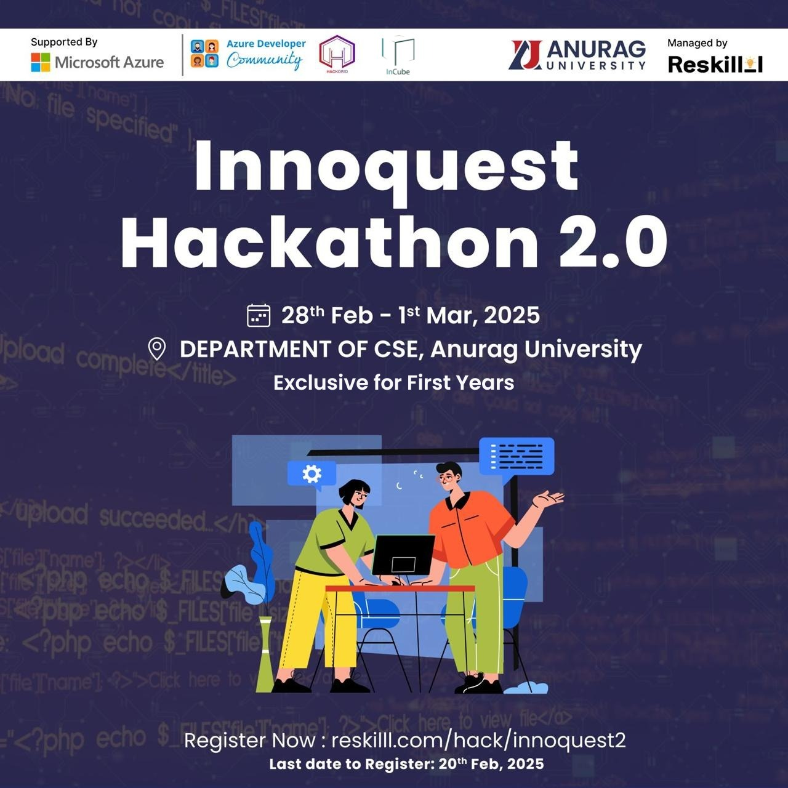

Innoquest 2.0
Conducted By:Hackorio
Description: Welcome to Innoquest Hackathon 2.0, where innovation meets creativity! This hackathon is a platform for passionate developers, designers, and problem-solvers to come together, collaborate, and create groundbreaking solutions to real-world challenges.
Building on the success of our first edition, Innoquest Hackathon 2.0 promises to be bigger, better, and more impactful. Whether you're a seasoned hacker or a first-time participant, this is your chance to showcase your skills, push boundaries, and make your ideas come to life.
What’s in Store:
Exciting Challenges: Solve real-world problems with cutting-edge technologies.
Collaborative Environment: Work alongside like-minded innovators and industry experts.
Prizes and Recognition: Win amazing rewards and gain recognition for your ingenuity.
Mentorship Opportunities: Get guidance from tech leaders and domain experts.
Who Should Join?
Developers, designers, entrepreneurs, students, and anyone with a passion for innovation and problem-solving.
Innoquest Hackathon 2.0 is not just a competition—it’s a celebration of creativity, teamwork, and the power of technology to drive change. Join us as we embark on this journey of exploration, learning, and invention.
